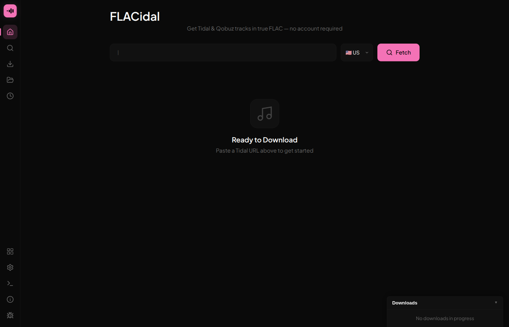
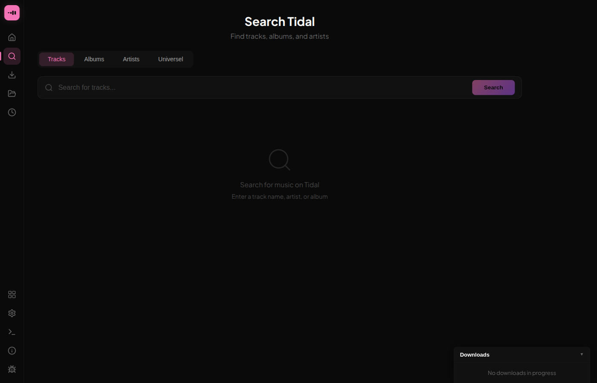
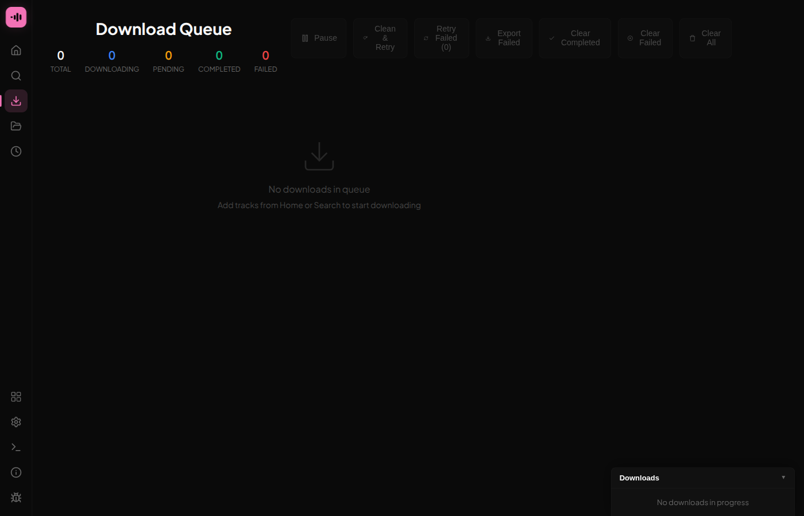
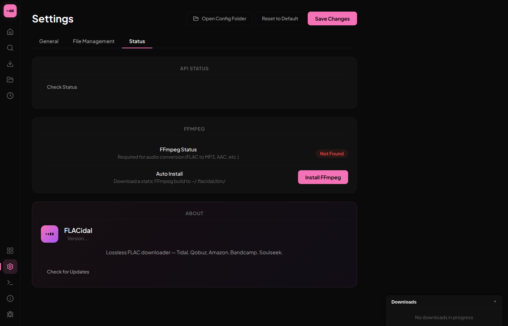

Lossless FLAC,
downloaded honestly.
A desktop app that pulls full-quality FLAC with real metadata and cover art — trying Tidal, Qobuz, Amazon and Bandcamp in turn, and falling back to a Soulseek P2P backbone that keeps working when the proxies don't.
Get the app
Native builds for all three desktop platforms. No account, no telemetry.
On Arch: yay -S flacidal-bin · Mobile: Android & iOS builds
Built for hoarders, not dashboards
Paste a link or search, watch the queue, and check exactly which source served each track.




No account, no single point of failure
Five independent sources, a P2P backbone that needs no API key, and full metadata — all in a native app that runs on your machine.
Set up Soulseek before anything else
Tidal, Qobuz and Amazon have hardened their APIs; the community proxies FLACidal uses to reach them go offline regularly. Soulseek works independently of all of that — it's five minutes and it's the source that keeps downloading.
Five-minute setup
- Make a free Soulseek account in the Nicotine+ or Soulseek client.
- Open FLACidal →
Settings → Soulseekand enter your username and password. - FLACidal installs the
sldlhelper automatically — no manual binary wrangling. - Move Soulseek to the top of your source order, then download as usual.